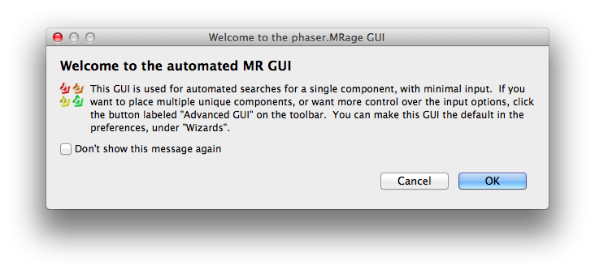
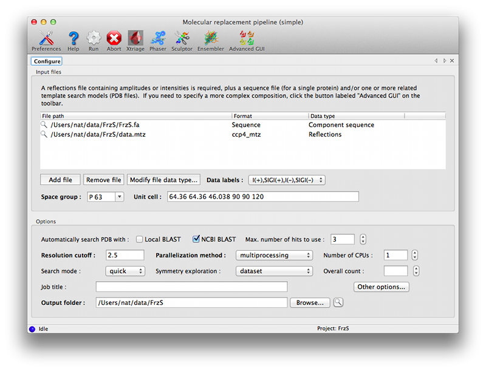
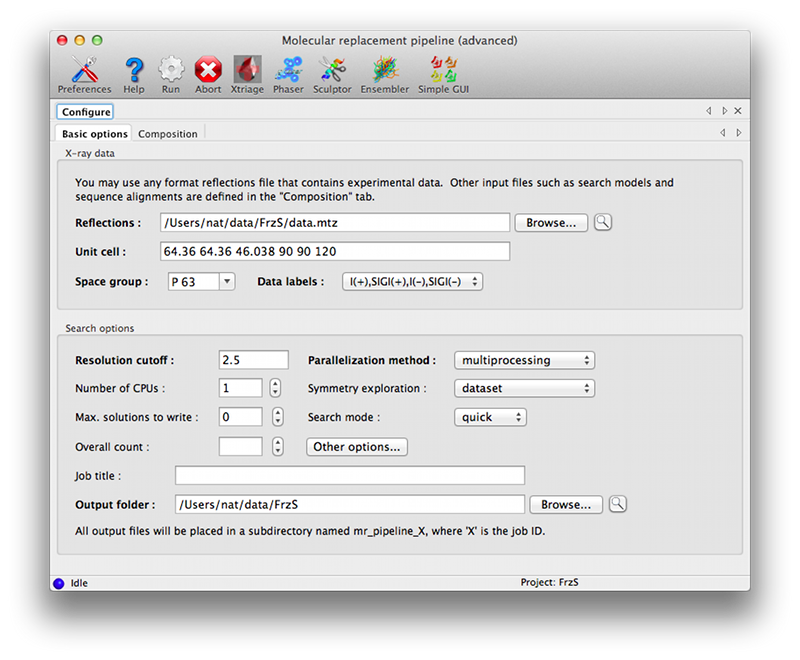
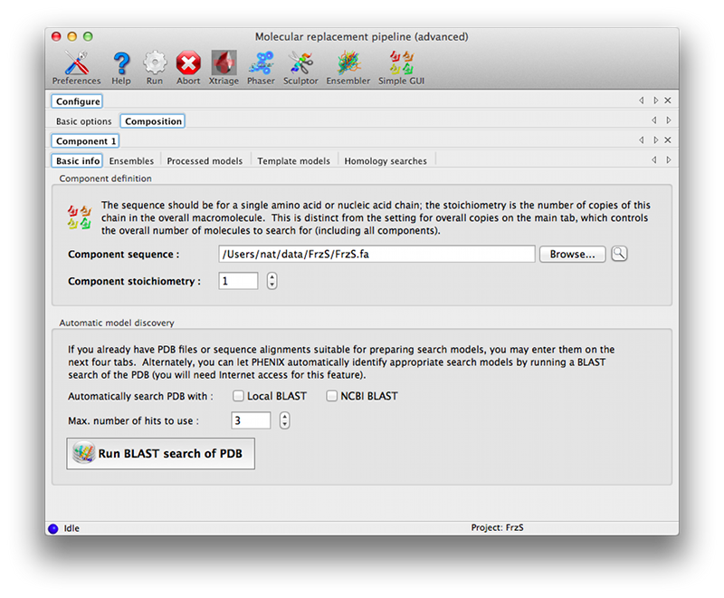

MRage is generic molecular replacement program that is designed to run efficiently with a large number of possible models on parallel hardware. It accepts multiple model definitions that are internally processed with integrated tools to search models and used for molecular replacement. Identified solutions can be used to speed up the search even further by model assembly algorithms and limiting search space.
The composition of the unit cell is specified by inputting components, and potential models for the corresponding component in a hierarchical way. It is recommended to specify the sequence of a component, which allows for better handling of partial models (see Composition stage). A stoichiometry of each component in the final assembly is also assigned at this stage. The overall count of assemblies in the unit cell can either be input or determined automatically from the Matthews coefficient. In case no model is known for a component, the list of potential models should be left empty.
Models for a component can be specified stepwise with the amount of preprocessing required. The following options are available:
- ensemble. This model is used without modification.
- model collection. These models will be superposed and optionally trimmed using phenix.ensembler, but no modification of sequence, sidechains, or B-factors will be performed.
- template. This model is run through phenix.sculptor with a given set of active protocols (default: use all protocols) to remove unrelated chain segments and solvent, trim sidechains and weight the model according to structure and homology. An alignment can be specified to be used to process the structure; in case this is omitted, phenix.muscle will be used to align the model to the target sequence.
- homology. Homology search results. Hits will be fetched from the wwPDB, and preprocessed as a template. It is possible to limit the homology search to the top N hits.
- search. Performs a BLAST search for homologs and processes the results as described above. Requires component sequence.
These steps are performed on-demand, i.e. if no clear solution could be found with available ensembles, the program processes the next template, or fetches the next homology search hit, etc.
Specifies the set of space groups to try in the search. Currently, there are three options available:
- dataset. The space group as specified on the input or read from the mtz-file.
- enantiomorph. The space group has been determined from systematic absences. The input space group and its enantiomorph (if exists) will be used in the search.
- pointgroup. Only the point group of the data has been established. All space groups compatible with the point group will be tried.
Space group exploration is exhaustive and can take several macrocycles to complete. Space groups with clearly inferior results to others are incrementally removed from the search until the correct space group is established.
MRage employs a sequential search algorithm, in which molecules are found consecutively. The algorithm consists of several stages, and also allows the exploration of potential space groups.
The composition of each partial structure (located in previous macrocycles) is compared with the composition of the unit cell. Available models that fit in the missing composition are selected for search. In case the modelled sequence for a search model is known, the program can account for the fact that a model may only be a partial model for a component (e.g. one domain only).
Calculations are organized into a search tree that is explored according to depth-first traversal. For the underlying calculations, available functions from phaser [PHASER] are used.
For each partial structure and applicable model, a rotation function is calculated. This is then followed up by a translation function calculation. Each translation function peaks are checked for packing clashes, and if accepted, checked whether are significant, probable solutions or not. Calculations are performed in the order of peak score (RF/TF), model quality (sequence identity) or partial structure quality (LLG score). Exploration continues until a significant solution is found (quick mode) or all possibilities has been exhausted (full mode). There is also no thresholding step for rotation (rationale: weak signal in rotation function) and translation function peaks (rationale: packing check fast). As a consequence, more work is performed, but simultaneously this allows weighting translation function results with packing overlap, and also avoids pipe stalls, which would adversely effect scaling in a parallel environment.
In quick mode, if a significant solution is found, conventional search terminates. However, all models that are alternatives of the model that gave this clear solution are superposed onto the solution and refined. This allows the quick evaluation of model quality for a potentially large number of alternative models. Currently, SSM [SSM] is used for superposition.
Parallelisation is done at a function level. Calculations are dispatched until the number of assigned CPUs are filled up. Execution can either take place in a shared memory environment using threads and processes or using a submission queue (currently SGE, LSF and PBS are supported). The degree of parallelisation scales with the complexity of the search, and given unlimited resources, reduces the runtime to a constant. However, in simple cases (e.g. a good model that gives a clear rotation and translation peak), no parallel resources can be used.
Peaks above a certain threshold of the best peak and those that are identified as significant solutions are subjected to refinement. After refinement is completed, a second thresholding step is performed. Top peaks will be subjected to post-processing and also carried forward for the next macrocycle. Significant peaks that are below the threshold (e.g. a correct solution for a small domain) are also input to the post-processing step, but will not be propagated to the next cycle.
Significant solutions are analysed for specific features so that the search could be improved.
- Amalgamation. Assembly of solutions that come from the same starting point. In case the "starting point" is empty, allowed origin shifts are added to the search. In case the origin is undefined and the space group has floating origin, only the rotation component is extracted.
- Rotation peak salvage. Propagates significant rotation peaks to the next stage.
- Regular assembly recognition. Identifies local point group symmetry from the solution.
- Assembly completion. In case assembly definitions are available (e.g. from regular assembly completion), and a partial assembly has been located, missing molecules are filled in.
No actual calculation is performed, only the possibilities are noted. In case the given solution enters the next Search stage (as determined by Composition stage), these possibilities will be scored as a priority.
Search progress in possible space groups is compared. Space groups having significant solutions or above the threshold (determined by the best score over all space groups) are propagated to the next macrocycle.
The program logs all operations it performs. However, this may be difficult to follow on the screen, especially when multiple space groups are explored, and therefore, after each macrocycle, a summary of all searches performed is printed.
Models generated during the solution process are also saved. This includes structure files fetched from the PDB, but also alignments and homology searches performed.
If the search finishes, solutions are written out in all likely space groups. For each space group, the top solution is selected, and all partial solutions above a threshold relative to the top solution is considered. Solutions that are fully "contained" in a higher scoring solution (i.e. all models correspond to a model in the higher scoring solution) are discarded. This way, the top solution is output even if the composition is overestimated, but at the same time removing incomplete solutions (e.g. 14 molecules out of the total 15) that cannot be distinguised based on the final score.
Solutions are written out in an internal compressed format, which is capable of storing a high number of solutions without onerous storage requirements, and can be manipulated with provided tools.
As with the generic Phaser GUI, two interfaces are available for running MRage, one designed for single-component searches with minimal customization of input models, and an advanced interface that allows all available features to be used. These are launched from a single button in the main GUI, which will initially pop up an information dialog describing the available options.

The simple GUI is centered around a single input control allowing any combination of files to be dragged in:
- Reflections (mandatory): these can be in any file or data format; only amplitudes or intensities are required.
- Sequence: should contain a single polymer sequence, in any format. This is highly recommended, and required if you want to perform an automatic homology search.
- Template models: unprocessed PDB files, which will be treated by Sculptor as described above.
- Homology search: HHPred or BLAST results.

In the simplest cases, only the data and sequence are required; you should then select a homology search method in the Options section. "NCBI BLAST" requires internet access; "Local BLAST" requires that BLAST is installed and available on the command line. At this point you can run the program without further input.
Other settings:
- Max. number of hits to use controls how many PDB entries from the homology search are processed by the pipeline. Increasing this provides greater coverage, but at the cost of significantly longer runtimes.
- Resolution cutoff determines the resolution used for running Phaser; this does not need to be changed, but increasing the cutoff will result in a faster but less accurate run.
- Parallelization method controls how the jobs are distributed across the available computing resources. multiprocessing and threading are essentially equivalent (although in practice they may behave slightly differently), and run locally. The other options require that you have access to one of the supported queuing systems and can submit jobs from the computer where you are running the GUI.
- Number of CPUs controls how many jobs are run at once. It should not exceed the number of processors available, either on the local system or the queuing system. (Note: if you plan to use your computer for other tasks while MRage is running, you may wish to leave one CPU core free if possible.)
- Search mode: sets the thoroughness of the search, as describe in the Search stage section.
- Symmetry exploration determines the space groups to try (Symmetry exploration)
- Overall count is the number of copies of the component to search for in the asymmetric unit.
This version of the GUI moves the description of the crystal contents and search information to a separate tab, with input options grouped by component. The first tab is essentially similar to the simple GUI, but the only input field is for the reflections file.

The composition tab contains another set of tabs for each unique component. These allow the full range of input files to be specified; some of these have additional parameters (such as the mandatory sequence identity for ensembles and model collections). The "Basic info" tab allows the NCBI BLAST search to be run interactively if desired (the results will be loaded as a homology result). A link to the HHPred server, which does not allow automated queries, is available on the "Homology searches" tab.

You must specify the component stoichiometry, i.e. the number of copies of the component in the overall assembly. This is distinct from the "Overall count" parameter in the main tab: for instance, if you are trying to solve a structure of a hexamer bound to a monomer and expect two copies of the complex in the asymmetric unit of the crystal, the overall count is two, and the stoichiometry of the components is 6 and 1 for the hexamer and monomer respectively.
phaser.MRage [command-line switches] [PHIL-format parameter files]
Command-line switches:
-h, --help show this help message and exit --show-defaults print PHIL and exit -i, --stdin read PHIL from stdin as well -v, --verbosity set verbosity level (DEBUG,INFO,WARNING,VERBOSE)
PHIL arguments
Everything not starting with a dash('-') is interpreted as a PHIL argument. This can be a PHIL-format file containing parameters or a command-line assignment.
| [PHASER] |
|
| [SSM] |
|